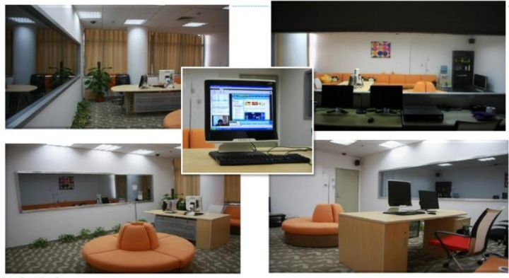
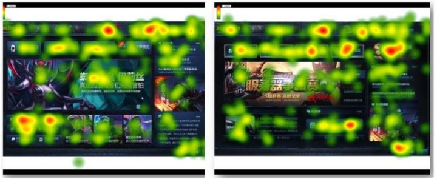
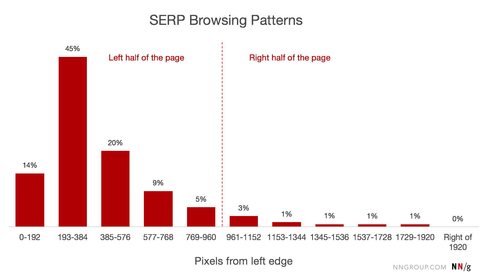
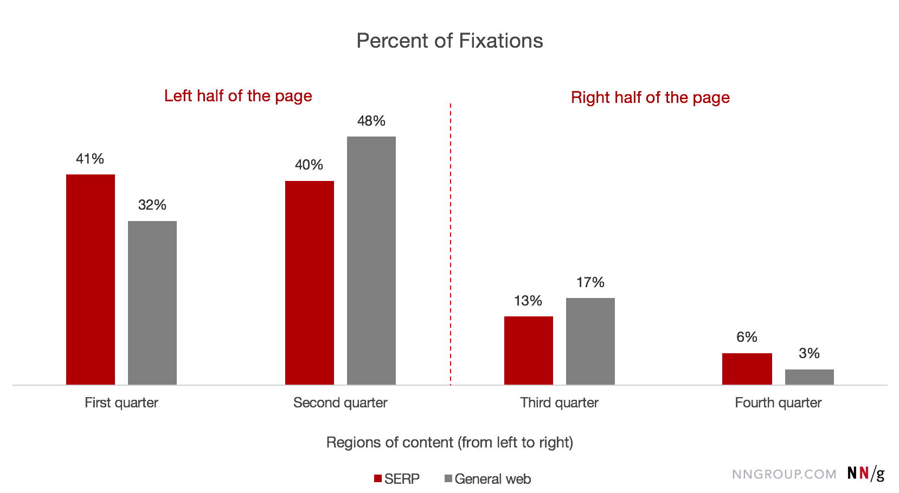

眼动实验及其对交互设计的帮助
分享人：颜彦
目录
一.背景介绍
二.眼动研究的价值
三.眼动图的靠谱程度
四.对布局设计的指导
五.结论
六.参考文献
一.背景介绍
什么是眼动研究？主要研究的是什么？

简单的说就是做眼动实验，研究视觉的移动轨迹，结合其它变量对比和分析用户关注点的变化。
主要收集的是停留时间、视线访问次数、视线轨迹、瞳孔大小、眼球运动速度、扫视路径等参数。再配合定性和定量数据分析，更真实的还原用户的认知和操作行为。
为什么要做眼动实验?
通过对用户视线的浏览轨迹(轨迹图)、停留时间(热点图)等方面的比较，利用定性定量的分析方法，发现用户的浏览习惯和产品的问题。
怎么做这项实验呢？
主要是在传统的实验室中进行。一般是由一间类似于办公室的区域和一面单向玻璃的可监视房间组成。必须保障实验室环境是一个安静的空间，测试的用户能够全神贯注于任务的执行。
部分进行现场测试。现场测试由于外部干扰因素多，收集声音、全方位的视频记录等数据困难，不适合作为主要分析数据。
眼动研究，不仅涉及到用户体验和交互研究。
还涉及到市场研究与消费者调研（包装设计、购物行为、广告研究）、婴幼儿研究、心理学和神经科学等等方面。
眼动仪的价格几万至几十万不等，根据功能和准确程度有较大差异。
二.眼动研究的价值
1、获悉用户浏览的行为和习惯
2、帮助研究人员分析与澄清问题
3、眼动图是优质的研究结果展示工具
1、获悉用户浏览的行为和习惯
当用户打开一个网页，看到一个广告的时候，到底看了些什么，没有看什么？什么东西最先获得用户的关注？这些信息很重要，因为很多时候用户关注的东西与设计希望用户看到的是不一样的，这种差别会通过眼动数据显示出来。例如网页设计师将一个重要的按钮做得非常显眼以便用户看到，而用户会对这个大按钮视而不见，眼睛却在满屏幕转，因为Ta将过于突出的按钮当成了广告。例如一些广告设计常见的问题是人们根本没有关注商品或商家的名字，而将视线放在了漂亮的模特身上。
2、帮助研究人员分析与澄清问题
在可用性测试中，遇到用户既无动作也不说话时，研究人员是最迷惑的。此时用户很可能执行任务受阻，研究人员需要决定何时提醒用户继续出声思维（think aloud）。而通过实时的眼动记录观测，研究人员可以间接地了解用户的处境——用户是在寻找什么东西，还是有什么东西令用户困惑（来回注视），还是用户忽视了相关的重要元素？研究人员还可以带着观点假设，开展眼动研究来验证或否决，发现导致问题的真正原因。
3、眼动图是优质的研究结果展示工具
在第一次了解接触眼动研究的时候，相信十有八九你同时看到过类似以下的眼动图。这是呈现眼动研究结果最常用到的热点图（heat map）。顾名思义，热点图呈现的是人们视线的“热点”，颜色越红的区域代表被聚焦得越多。通常这样的结果图非常吸引人，因为看起来一目了然，是“一图胜千言”的好代表。研究人员喜欢展示这样有说服力的图，观众也喜欢看简单直观的结果。所以眼动图作为可视化手段起到了良好的信息传达作用。
AB测试
三.眼动图的靠谱程度
1、所看=所想？
2、注视越长越好？
3、眼动结果很客观？
1、所看=所想？
人们的注意能够与注视相分离。我们也知道，有时候眼神在呆视而实际上大脑在神游。所以说，仅仅知道人在看什么，并不等同于知道Ta在想什么。对此，心理学者提出了大脑—眼睛一致性假说，指的是人们所看与所想的通常是一回事。尤其是人们专注于某一特定任务时，这个假说通常是成立的。有此前提，我们才能够接纳眼动研究的可靠性。当然，再加上实验对象的调查、访谈，会可靠。
2、注视越长越好？
假如用户的视线长时间停留，这到底说明是好是坏呢？这有两种可能，一种是用户看到了感兴趣的东西，而且集中精力地看；另外一种可能是用户对某些内容感到困惑，不得不花时间理解。单纯就眼动数据而言，研究人员难以辨别到底是哪一种情况。因此使用眼动研究的一个重要的原则是不要单纯依赖于眼动数据。要了解用户所想，必须通过问询或其他方法进行。研究人员要结合多种研究方法来解读眼动的数据。
3、眼动结果很客观？
热点图看起来很酷，而且就像板上钉钉的事实。然而，眼动图是最容易吸引人也最容易忽悠人的手段。
原因第一，用户数量较少时眼动图的结果可能变异非常大。Nielsen(《用眼动追踪提升网站可用性》的作者)建议要得到稳定的热点图至少需要30个有效的被试数据*。
第二，用户的浏览方式随任务不同而变化。当要求用户执行不同任务时，人们关注的地方是很不一样的。如果使用了不合理的任务，那么得到的结果很容易有误导作用。
第三，单个测试的结果说明不了共性问题。要获得有普遍意义的结果，需要有多个同类型网站的比较才有可靠性。因此需要谨慎利用其他网站的眼动测试结果。
四.对布局设计的指导
水平方向上的注意力倾向于左侧
网络用户花费80%的注意力观察页面的左半边，而20%的注意力观察右半边。接受这样的设计约定，有利于提升用户的使用效率和公司的利润。
针对10年的研究(1024×768，注意力比例69:30)，17年针对1920×1080的显示器，收集来自120多个参与者的数据。得到下面按照像素分布的观察统计。
下面是针对搜索器的统计情况。
搜索器由于将大部分结果放置在页面的左侧(针对高分辨率屏幕)，所以左侧的数据明显偏高。
如果将搜索结果内容按照百分比划分成四个部分，web进行对比的话。
从10年到17年的变化情况，页面左侧受到越来越多的关注。可能的推测是用户习惯和网站设计不断正反馈的结果。
以上的数据统计情况能指导我们设计基本的页面布局。比如最左侧的导航，列表数据、信息流的主要内容或重点区域靠中间偏左，次级内容或不常用到的功能放置在右侧区域。放置在右侧区域的内容想引起重视必须要添加能引起用户注意的属性(体积大、颜色更鲜明、字体突出等等)。
五.结论
随着眼动追踪设备的简易化与精细化，今天眼动技术运用得更加广泛。但是由于影响眼动实验的因素很多，包括用户，任务，测试内容普适性、样本量、内容、观察者等等。综合设计一套合理的实验需要耗费成本很多，实际往往是针对某种特定的情况进行实验，这样得出的结论需要结合多种分析、收集工具才能有效的分析用户的行为。
说白了我们从网上或者真正实验收集到的数据，得出结论，不能无脑拿来用，还要分析具体的研究背景，各项因素。是否正好跟自己的项目契合。
6.参考文献
Horizontal Attention Leans Left
鸣谢
感谢大家观看
By 颜彦